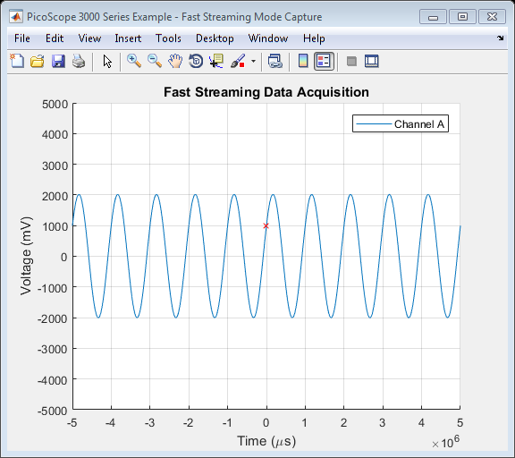

PicoScope 3000 Series Oscilloscope Fast Streaming Data Capture Example
This is a MATLAB script that demonstrates how to use the ps3000 API library functions to capture a data using fast streaming from a PicoScope 3000 Series oscilloscope using the following approach:
- Open a unit
- Display unit information
- Set up an input channel
- Setup a trigger
- Start the device collecting data
- Retrieve data values and convert to millivolts
- Plot data during collection (if option is selected)
- Retrieve data values from the driver on completion of capture and plot
- Close the unit
To run this example:
Type PicoScope3000FastStreamingExample at the MATLAB command prompt or run from the MATLAB Editor.
Copyright © 2017 Pico Technology Ltd. See LICENSE file for terms.
Contents
- Suggested Input Test Signals
- Clear Command Window and Close Any Figures
- Load Configuration Information
- Define any variables to be used throughout the script
- Load Libraries
- Open a Connection to a Device
- Display Unit Information
- Setup Channels
- Setup Trigger
- Set Data Buffers
- Configure Streaming Data Collection Parameters and Collect Data
- Stop the Device
- Retrieve Raw Data Samples from the Driver
- Process Data
- Clear Fast Streaming Parameters
- Close the Connection to the Device
- Unload Libraries
Suggested Input Test Signals
This example was published using the following test signal(s):
- Channel A: 4 Vpp, 1 Hz sine wave
Clear Command Window and Close Any Figures
clc;
close all;
Load Configuration Information
PS3000Config;
Define any variables to be used throughout the script
channelA = ps3000Enuminfo.enPS3000Channel.PS3000_CHANNEL_A; chARange = ps3000Enuminfo.enPS3000Range.PS3000_5V; chARangeMv = PicoConstants.SCOPE_INPUT_RANGES(chARange + 1); maxADCCount = PS3000Constants.PS3000_MAX_VALUE;
Load Libraries
Load the (lib)ps3000 and (lib)ps3000Wrap shared libraries using the prototype file.
fprintf('PicoScope 3000 Series Fast Streaming Example\n\n'); if (~libisloaded('ps3000') || ~libisloaded('ps3000Wrap')) if (ismac) loadlibrary('libps3000.dylib', @ps3000MFile, 'alias', 'ps3000'); loadlibrary('libps3000Wrap.dylib', @ps3000WrapMFile, 'alias', 'ps3000Wrap'); elseif (isunix) loadlibrary('libps3000.so', @ps3000MFile, 'alias', 'ps3000'); loadlibrary('libps3000Wrap.so', @ps3000WrapMFile, 'alias', 'ps3000Wrap'); elseif (ispc) loadlibrary('ps3000.dll', @ps3000MFile); loadlibrary('ps3000Wrap.dll', @ps3000WrapMFile); else error('PicoScope3000Block:OSNotSupported', 'Operating System not supported.'); end end
PicoScope 3000 Series Fast Streaming Example
Open a Connection to a Device
unitHandle = calllib('ps3000', 'ps3000_open_unit'); if (unitHandle == 0) unloadlibrary('ps3000'); unloadlibrary('ps3000Wrap'); error('PicoScope3000FastStreamingExample:OscilloscopeNotFound', 'No oscilloscope found.'); elseif (unitHandle == -1) unloadlibrary('ps3000'); unloadlibrary('ps3000Wrap'); error('PicoScope3000FastStreamingExample:OscilloscopeFailedToOpen', 'Oscilloscope failed to open.'); end
Display Unit Information
disp('Unit Information:'); infoData = cell(6,1); channelCount = 2; % Minimum number of channels for i = 0:5 infoString = blanks(40); stringLength = length(infoString); [~, infoData{i + 1}] = calllib('ps3000', 'ps3000_get_unit_info', unitHandle, infoString, stringLength, i); % Identify the number of channels, then pass this information to the % wrapper shared library if (i == PicoStatus.PICO_VARIANT_INFO) channelCount = str2double(infoData{i + 1}(2)); status.setChannelCount = calllib('ps3000Wrap', 'setChannelCount', unitHandle, channelCount); end end disp(infoData);
Unit Information:
'3.9.0.6'
'2.0'
'8'
'3425'
'XFY08/034'
'15Jan09'
Setup Channels
Set the channels on the device, noting which channels have been enabled. Information on which channels are enabled will need to be passed to the wrapper shared library.
% The order of channels in this array are [A, B, C, D] enabledChannels = zeros(PicoConstants.QUAD_SCOPE, 1, 'int16'); chAEnabled = 1; dc = 1; status.setChA = calllib('ps3000', 'ps3000_set_channel', unitHandle, channelA, chAEnabled, dc, int16(chARange)); % Set the flag in the array to indicate if the channel is enabled; the +1 % accounts for the zero-based indexing used in the enumeration values enabledChannels(channelA + 1) = chAEnabled; status.setEnabledChannels = calllib('ps3000Wrap', 'setEnabledChannels', unitHandle, enabledChannels);
Setup Trigger
Set a trigger for a rising edge through a 1 V threshold level on channel A. Set the device to wait indefinitely for a trigger event with the trigger point being in the middle of the set of the data. If the trigger channel is set to enPS3000Channel.PS3000_NONE, the trigger will be disabled.
triggerChannel = ps3000Enuminfo.enPS3000Channel.PS3000_CHANNEL_A; threshold = mv2adc(1000, chARangeMv, PS3000Constants.PS3000_MAX_VALUE); direction = ps3000Enuminfo.enPS3000TriggerDirection.PS3000_RISING; delay = -50.0; autoTrigMs = 0; status.setTrigger2 = calllib('ps3000', 'ps3000_set_trigger2', unitHandle, channelA, ... threshold, direction, delay, autoTrigMs);
Set Data Buffers
Data buffers for channel A - temporary application buffers should be set with the the wrapper shared library in order to ensure data is correctly copied. In this example, raw data values will be collected from the device.
overviewBufferSize = 25000; % Size of the temporary buffers used to collect data from the device. % Application Buffers - these are for temporarily copying data from the driver. pAppBufferChA = libpointer('int16Ptr', zeros(overviewBufferSize, 1, 'int16')); % Register application buffer with the shared wrapper library). status.setAppAndDriverBuffersA = calllib('ps3000Wrap', 'SetDataBuffer', unitHandle, channelA, ... pAppBufferChA, overviewBufferSize);
Configure Streaming Data Collection Parameters and Collect Data
Collect data for 10 seconds using a sampling rate of 20 kS/s with auto stop after trigger event has occurred - maximum array size will depend on PC's resources - type memory at the MATLAB command prompt for further information.
sampleInterval = 50; timeUnits = ps3000Enuminfo.enPS3000TimeUnits.PS3000_US; numSamples = 200000; autoStop = 1; numSamplesPerAggregate = 1; % Raw data collection required % Defined buffers to store data collected from channels. If capturing data % with the |autoStop| flag set to 0, or if using a trigger with the % autoStop flag, allocate sufficient space (1.5 times the size is shown % below) to allow for additional pre-trigger data. Pre-allocating the array % is more efficient than using vertcat to combine data. % % In this example, the collection of live data from the driver is % demonstrated as is retrieval of the data from the driver when the % collection is complete. maxBufferLength = numSamples * 2; pBufferChAFinal = libpointer('int16Ptr', zeros(maxBufferLength, 1, 'int16')); % Prompt User to indicate if they wish to plot live streaming data. choice = questdlg('Plot live streaming data?', ... 'Streaming Data Plot', ... 'Yes','No','Yes'); % Handle response switch choice case 'Yes' disp('Live fast streaming data collection with second plot on completion.'); plotLiveData = PicoConstants.TRUE; case 'No' disp('Fast streaming data plot on completion.'); plotLiveData = PicoConstants.FALSE; end % Retrieve the data values % Start the device collecting streaming data. [status.runStreamingNs] = calllib('ps3000', 'ps3000_run_streaming_ns', unitHandle, ... sampleInterval, timeUnits, numSamples, autoStop, ... numSamplesPerAggregate, overviewBufferSize); disp('Fast Streaming data collection...'); fprintf('Click the STOP button to stop capture or wait for auto stop if enabled.\n\n') % Variables to be used when collecting the data hasAutoStopped = PicoConstants.FALSE; newSamplesCollected = 0; % Number of new samples returned from the driver. previousTotal = 0; % The previous total number of samples. totalSamples = 0; % Total samples captured by the device. hasTriggered = 0; % To indicate if trigger has occurred. triggeredAtIndex = 0; % The index in the overall buffer where the trigger occurred. overflow = 0; % Indicates if there has been an over-range on one or more channels. % Libpointer objects for streaming data parameters pOvFlow = libpointer('int16Ptr', 0); pTrigAt = libpointer('uint32Ptr', 0); pTrig = libpointer('int16Ptr', 0); pAutoStop = libpointer('int16Ptr', 0); pNewSamples = libpointer('uint32Ptr', newSamplesCollected); status.getStreamingLastValues = PicoConstants.TRUE; % OK % Display stop button [stopFig.f, stopFig.h] = stopButton(); flag = 1; % Use flag variable to indicate if stop button has been clicked (0) setappdata(gcf, 'run', flag); % Set x-axis for both live and post-capture plots according to the time % units specified. Also find the scaling factor to convert to nanoseconds % when retrieving the data from the driver post-capture). switch (timeUnits) case ps3000Enuminfo.enPS3000TimeUnits.PS3000_FS xLabelStr = 'Time (fs)'; timeScaleFactor = 1e-6; case ps3000Enuminfo.enPS3000TimeUnits.PS3000_PS xLabelStr = 'Time (ps)'; timeScaleFactor = 1e-3; case ps3000Enuminfo.enPS3000TimeUnits.PS3000_NS xLabelStr = 'Time (ns)'; timeScaleFactor = 1; case ps3000Enuminfo.enPS3000TimeUnits.PS3000_US xLabelStr = 'Time (\mus)'; timeScaleFactor = 1e3; case ps3000Enuminfo.enPS3000TimeUnits.PS3000_MS xLabelStr = 'Time (ms)'; timeScaleFactor = 1e6; case ps3000Enuminfo.enPS3000TimeUnits.PS3000_S xLabelStr = 'Time (s)'; timeScaleFactor = 1e9; otherwise xLabelStr = 'Time (ns)'; timeScaleFactor = 1e-9; end % Plot Properties - these are for displaying data as it is collected. if (plotLiveData == PicoConstants.TRUE) % Plot on a single figure figure1 = figure('Name','PicoScope 3000 Series Example - Fast Streaming Mode Capture', ... 'NumberTitle','off'); axes1 = axes('Parent', figure1); % Estimate x-axis limit to try and avoid using too much CPU resources % when drawing - use max of multiple channels if plotting on same % graph. xlim(axes1, [0 (sampleInterval * (maxBufferLength - 1))]); yRange = chARangeMv + 0.5; ylim(axes1,[(-1 * yRange) yRange]); hold(axes1, 'on'); grid(axes1, 'on'); title(axes1, 'Live Fast Streaming Data Capture'); xlabel(axes1, xLabelStr); ylabel(axes1, 'Voltage (mV)'); end while (hasAutoStopped == PicoConstants.FALSE && status.getStreamingLastValues == PicoConstants.TRUE) ready = PicoConstants.FALSE; while (ready == PicoConstants.FALSE) status.getStreamingLastValues = calllib('ps3000Wrap', 'GetStreamingLastValues', unitHandle); ready = calllib('ps3000Wrap', 'IsReady', unitHandle); % Give option to abort from here flag = getappdata(gcf, 'run'); drawnow; if (flag == 0) disp('STOP button clicked - aborting data collection.') break; end drawnow; pause(1); end % Check for data [status.availableData] = calllib('ps3000Wrap', 'AvailableData', ... unitHandle, pOvFlow, pTrigAt, pTrig, pAutoStop, pNewSamples); newSamplesCollected = pNewSamples.Value; hasTriggered = pTrig.Value; triggeredAtIndex = pTrigAt.Value; hasAutoStopped = pAutoStop.Value; if (newSamplesCollected > 0) if (hasTriggered == PicoConstants.TRUE) % Adjust trigger position as MATLAB does not use zero-based % indexing bufferTriggerPosition = triggeredAtIndex + 1; % Adjust by 1 due to driver using zero indexing triggeredAtIndex = totalSamples + bufferTriggerPosition; fprintf('Triggered - index in buffer: %d, total samples at trigger point: %d\n', ... bufferTriggerPosition, triggeredAtIndex); end previousTotal = totalSamples; totalSamples = totalSamples + newSamplesCollected; % Printing to console can slow down acquisition - use for demonstration if (newSamplesCollected == 1) fprintf('Collected %d sample, total: %d\n', newSamplesCollected, totalSamples); else fprintf('Collected %d samples, total: %d\n', newSamplesCollected, totalSamples); end % Convert data values to millivolts from the application buffers bufferChAmV = adc2mv(pAppBufferChA.Value(1:newSamplesCollected), chARangeMv, maxADCCount); % Process collected data further if required - this example plots % the data if the User has selected 'Yes' at the prompt. % Copy data into the final buffer(s) pBufferChAFinal.Value(previousTotal + 1:totalSamples) = bufferChAmV; if (plotLiveData == PicoConstants.TRUE) % Time axis % Multiply by ratio mode as samples get reduced. time = (double(sampleInterval) * (previousTotal:(totalSamples - 1))); plot(axes1, time, bufferChAmV); end % Clear variables for use again clear bufferChAMV; clear triggeredAt; end if (hasAutoStopped == PicoConstants.TRUE) disp('AutoStop: TRUE - exiting loop.'); break; end % Check if 'STOP' button pressed flag = getappdata(gcf, 'run'); drawnow; if (flag == 0) disp('STOP button clicked - aborting data collection.') break; end end % Close the STOP button window if (exist('stopFig', 'var')) close('Stop Button'); clear stopFig; end if (plotLiveData == PicoConstants.TRUE) drawnow; % Take hold off the current figure. hold(axes1, 'off'); movegui(figure1, 'west'); end if (hasTriggered == PicoConstants.TRUE) fprintf('Triggered at overall index: %d\n', triggeredAtIndex); end fprintf('\n');
Fast streaming data plot on completion. Fast Streaming data collection... Click the STOP button to stop capture or wait for auto stop if enabled. Collected 576 samples, total: 576 Collected 20544 samples, total: 21120 Collected 3880 samples, total: 25000 Triggered - index in buffer: 1, total samples at trigger point: 25001 Collected 24999 samples, total: 49999 Collected 1 sample, total: 50000 Collected 24999 samples, total: 74999 Collected 1 sample, total: 75000 Collected 24999 samples, total: 99999 Collected 1 sample, total: 100000 Triggered - index in buffer: 13081, total samples at trigger point: 113081 Collected 24999 samples, total: 124999 Collected 1 sample, total: 125000 Collected 24999 samples, total: 149999 Collected 1 sample, total: 150000 Collected 24999 samples, total: 174999 Collected 1 sample, total: 175000 Collected 24999 samples, total: 199999 Collected 1 sample, total: 200000 Collected 13081 samples, total: 213081 AutoStop: TRUE - exiting loop.
Stop the Device
Ensure that the ps3000_stop() function is called at the end of data collection.
status.stop = calllib('ps3000', 'ps3000_stop', unitHandle);
Retrieve Raw Data Samples from the Driver
Raw data can also be retrieved directly from the driver when the data completion is complete.
% Calculate the start time based on the trigger delay if (triggerChannel == ps3000Enuminfo.enPS3000Channel.PS3000_NONE) startTime = 0.0; else startTime = (delay / 100) * numSamples * sampleInterval * timeScaleFactor; end pStartTime = libpointer('doublePtr', startTime); pDataBufferChA = libpointer('int16Ptr', zeros(numSamples, 1, 'int16')); pDataBufferChB = []; pDataBufferChC = []; pDataBufferChD = []; pOverflow = libpointer('int16Ptr', 0); pTriggerAt = libpointer('uint32Ptr', 0); pTrigger = libpointer('int16Ptr', 0); totalSamplesCollected = calllib('ps3000', 'ps3000_get_streaming_values_no_aggregation', unitHandle, pStartTime, pDataBufferChA, ... pDataBufferChB, pDataBufferChC, pDataBufferChD, pOverflow, pTriggerAt, pTrigger, numSamples);
Process Data
Process data collected. In this example, the data is plotted.
if (totalSamplesCollected > 0) % Retrieve values and convert to millivolts if required dataBufferA = adc2mv(pDataBufferChA.Value, PicoConstants.SCOPE_INPUT_RANGES(chARange + 1), PS3000Constants.PS3000_MAX_VALUE); % Calculate time axis values - start time might be a negative number if % pre-trigger samples are being collected. The time values are in % nanoseconds. Convert the values back to the desired time units as % part of the calculation. finalTimeAxisValues = ((pStartTime.Value / timeScaleFactor) + sampleInterval * (0:totalSamplesCollected - 1)); finalFigure = figure('Name','PicoScope 3000 Series Example - Fast Streaming Mode Capture', ... 'NumberTitle', 'off'); finalFigureAxes = axes('Parent', finalFigure); movegui(finalFigure, 'east'); hold(finalFigureAxes, 'on'); title(finalFigureAxes, 'Fast Streaming Data Acquisition', 'FontWeight', 'bold'); % Channel A plot(finalFigureAxes, finalTimeAxisValues(1:totalSamplesCollected), dataBufferA(1:totalSamplesCollected)); % Plot trigger point if (pTrigger.Value == PicoConstants.TRUE) triggerIndex = pTriggerAt.Value + 1; plot(finalFigureAxes, finalTimeAxisValues(triggerIndex), dataBufferA(triggerIndex), 'rx'); end ylim(finalFigureAxes, [(-1 * chARangeMv) chARangeMv]); xlabel(finalFigureAxes, xLabelStr); ylabel(finalFigureAxes, 'Voltage (mV)'); legend(finalFigureAxes, 'Channel A'); grid(finalFigureAxes, 'on'); else warning('PicoScope3000FastStreamingExample:NoSamplesCollected', 'No samples collected.'); end
Clear Fast Streaming Parameters
Clear parameters if another data acquisition run is required.
status.clearFastStreamingParameters = calllib('ps3000Wrap', 'ClearTriggerInfo', unitHandle);
Close the Connection to the Device
status.closeUnit = calllib('ps3000', 'ps3000_close_unit', unitHandle);
Unload Libraries
unloadlibrary('ps3000'); unloadlibrary('ps3000Wrap');